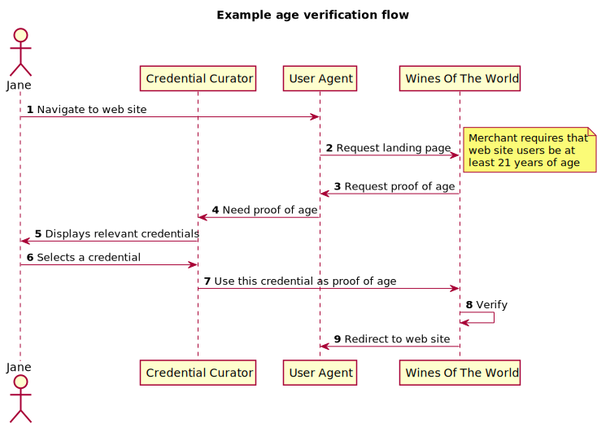

A verifiable claim is a qualification, achievement, quality, or piece of information about an entity's background such as a name, government ID, payment provider, home address, or university degree. The use cases outlined here are provided in order to make progress toward possible future standardization and interoperability of both low and high-stakes claims with the goals of storing, transmitting, and receiving digitally verifiable proof of qualifications and achievements. The following use cases focus on concrete scenarios that the technology created by the group should address.
This document is an early version being used as an integration point for a variety of use cases assembled from throughout the industry. As the document becomes more mature this status will be updated accordingly.
The Verifiable Claims Task Force at the W3C is investigating the requirements around secure, verifiable, and richly descriptive "claims". The goal of the Task Force is to determine if there is a sufficient understanding and need to merit the creation of a W3C Working Group to develop Recommendations in this space.
People need to make many kinds of claims as part of their everyday lives. As more important business moves to the Internet, people need to be able to transmit instantly verifiable claims about their accomplishments and qualifications. From educational records to payment account access, the next generation of web applications will authorize users to perform actions based on rich sets of credentials issued by trusted parties. Human-mediated decisions about job applications, collaboration and professional development will depend on filtering and analyzing growing amounts of data about individuals' experience and accomplishments.
Standardization of digital claim technologies makes it possible for many stakeholders to issue, earn, and trust these essential records about their counterparties, without being locked into proprietary platforms.
This document is organized around the basic operations that might be performed on a Verifiable Claim. For each of these operations, and for the additional section "Uncategorized / General", the document captures some high level use cases grouped by the requirement they represent. Each use case contains information about its motivation, relative priority, and one or more examples to help define the target beneficiaries of its support.
Just to provide a basis for discussion, this section illustrates a simple example of how a claim might be used in a typical commerce situation. Please remember that it is just an example, and should not be thought of as the canonical way such a system must be implemented. First, consider this diagram:
Each use case in this section should have a unique human assigned identifier that starts with "uc". The example use case (in the source below, commented out), which everyone should feel free to use a template, has the id "uc-example". In order to disambiguate, please ensure that the subsection is added into the prefix (e.g., uc-issuing-my-new-use-case). Also, please use hyphens instead of camel case.
Purpose The Country Government does not want to build a centralised repository for citizen’s self-asserted credentials such as contact details and perhaps other claimed attributes such as partner’s name, etc. Alternatively, the objective is to support the marketplace to develop an ecosystem of local or global providers that offer the citizen a range of options to choose from. A standard could enable an approach that would remove dependence on any particular technology or platform as the choice of repository for an individual’s self-asserted profile – for example, personal mobile device, open cloud service, commercial provider website.
Agency and citizen requirements:
Use case – register with service provider
Consuming
Company would like to be able to attach authenticated user identity to their outcome results for their performance during time at educational institutions using our software to facilitate their learning and assessment. Company relies on strong identity assertions to prevent fraudulent access to our systems and data, and a standards based approach would lower our need to invent and maintain a proprietary solution to this problem.
Issuing
Provide an interoperable standard for credentials on the web that allows for delegated issuance of standard web-based credentials to end users of a system. As an example, a credential authority would be able to authorize 1 or more credential issuers which would in turn be able to issue secure credentials that are accepted as valid and acceptable by consumers of the authorities credentials.
Managing and Sharing
We would like to let credential earners compose their credentials into representations that meet the needs of particular requestors, such as when job applicants package up a resume for the needs of a certain position opening. We would like to be able to better match up a particular credential against various parties’ needs for credentials, in an expressive way. “I am looking for a candidate who has experience with ‘scrum-based agile software development’”, for example.
General
The Directive for Payment Services (II), legislation in Europe defines : ‘personalised security credentials’ means personalised features provided by the payment service provider to a payment service user for the purposes of authentication; I do not know if this type of credentials is in your scope but, it is the most compelling matter we have so far.
Consuming
Multiple credential issuers issue Jane a set of credentials for her shipping address, loyalty card, payment instrument, proof of age, and email address. When she goes to a new store to buy something, all of those credentials are requested by the merchant in a single credentials request. The credentials are delivered via the browser from Jane’s credential storage service to the merchant’s website and Jane initiates the payment process. Jane does not have to fill out any form information or register with the website to complete the purchase since her credentials contain everything the merchant needs to finalize the transaction.Scenarios and motivations above added as consuming use case (@burnburn).
Issuing
A prospective user on a feature phone is able to register with a Mobile Money Wallet provider at a specific KYC tiered level. They register using shared secrets known only to the third party (could be government) Identity Provider (IdP). The registration takes place via a feature phone - e.g. via USSD session or SMS messages. Credentials are then stored with the Mobile Wallet provider and renewed automatically with the issuing authority.
Consuming
For banks and other financial institutions it would be the ability to verify on-line customer or potential customer information such a name, address, social security number, age, employment and salary information, credit history and various biometrics such as facial and fingerprint.
Consuming
We do promote the use of LEI, the Legal Entity Identifier. This is
focussed on banks, which will provide certainty in financial trades. E.g.,:
General
Work being done at G3ict and Raising The Floor initiative seek to provide Assistive Technology from the cloud, which will require robust credentials to ensure privacy and security concerns, while still “opening the door” to access these types of cloud services. I see a standardized credentials system playing a big part in these efforts.
General
Company provides services to hundreds of thousands of financial decision makers around the globe, and uses proprietary authentication mechanisms to provide access to these services. Many of our clients would benefit from being able to leverage our authentication mechanisms in their own web applications, whether those applications connect to Company services or are independent, but today it is difficult to achieve that integration due to the lack of standardization in this area. We also have a rapidly growing community of third-party application developers who provide applications to our clients, and integration of those applications with our authentication mechanisms is complicated by the proprietary nature of the mechanisms. If Company was able to offer a standards-based credential provider that was usable by our clients in any compatible browser and by any compatible application, using only W3C Recommendation-defined APIs and protocols, this would be very beneficial to our ecosystem.
Issuing
We wish to issue personal credentials to people who have met our requirements (exam or other evaluation). We need these credentials to be verifiable as genuine by third parties. We need this to work in multiple languages,
Issuing
Company is a the leading provider of electronic textbooks to higher-ed. A large percentage (near 75%) of integrations with our partner institutions launch (open) an eTextbook through the IMSGlobal standard: Learning Tools Interoperability (LTI). At present Company processes about two million LTI launches per month. So the primary use case is: Student logs on to their learning system (LMS) and clicks an eTextbook icon that they would like to study. Our LTI integration broker needs to subscribe the student if it’s their first visit. Furthermore it needs to issue a license for the eTextbook if non currently exists. Finally it presents the eTextbook contents to the student. Added as issuing use case (@gkellogg).
Consuming
Consuming
From the processor perspective, issues surrounding the merchant integration of retail with web shopping - there is great interest in cases where a customer will pay online and then pick up in in-store; or if a customer were to place the order online and then pay at the pick-up. Additional areas of concern from instances of Card not present or online shipping where items may be delivered in split shipments requiring multiple authorizations or an item is on back order and the customer wants to complete the transaction - or even instances of advanced orders contingent on future availability.
Consuming
A customer presents a driver’s license to buy alcohol. In the same transaction, the customer buys other items and presents a SNAP card for payment. The previously presented driver’s license should be used as an authentication for both methods of payment without relying on the competence of the clerk.
Issuing, Consuming
The Company runs experience-based certification programs exchange of credentials could unfold in two ways: 1) Issuing credentials on the validity of a certificate after successful assessment of candidates 2) Candidates bringing in evidence of certain activities necessary to comply with conformance requirements e.g. “I have maintained my profession by following xyz course”
Managing / Sharing
Actors: job seekers/learners/employers Purpose: Credential discovery, identification, and comparison By means of the Web, individual learners and organizations needing to make sense of the rapidly growing credential marketplace in order to make education/training and job seeking decisions want to quickly discover, identify, and compare available credentials and credential providers based on a number of criteria including, but not limited to: (1) type of credential, (2) scope of credential application (e.g., job types, geographic areas), (3) transfer value, (4) competencies addressed; (5) mechanisms of assessment, (6) prerequisite competencies, and (7) accreditation/endorsement status.
Issuing / Consuming
We are building various decentralized applications (dApps) and platforms that all make use of our ID/Persona/Reputation system. “Sign in” to these dApps is accomplished via the wallet that we have built which serves as a container for ID/Persona. A small number of examples of the systems that use this ID/Persona/Reputation construct include Product, our prediction markets platform, our Poker platform, and Music Platform, our open music industry platform
Consuming
We are primarily interested in credentials in relation to content and annotation ownership. Our use cases center around moderation of annotations, cumulative reputation for credentialed individuals, notification (where possible) to content owners that their content is being annotated or their annotations are being replied to, as well as content and annotation distribution and publishing vetted by a distributed reputation system (permission to publish based on merit, explicit permission).
Consuming / Issuing
In MOOC and other on-line learning systems being able to reliably identify participants is vital to ensure the individual evaluation and certification. A participant that performs a test certified on the Web must provide his credentials to prove his identity before the test, and then to allow the system to issue a secure certificate of his results to the test.
Consuming
We integrate with many products and each product has it’s own credentialing system. Some use LDAP, but that is not consistent. This causes headaches because we don’t know which account to assign which user, especially if they use the account to store data. Will be nice to have a centralized Identity server (like OpenID connect)
Consuming
Transient private communication is difficult, since the ActivityPump spec requires verifying the that a message came from its origin, so signatures may help here.
Managing / Sharing
Bank-ID: based on already executed Customer Due Diligince process at the bank, other service providers such as retailers may request trusted credentials for a specific customer, such as current address or age limits. A retailer selling wine products on-line asks a customer to identify himself via the Bank-ID service. The customer logs in via a dialogue provided by his bank, using the 2FA token provided by the bank. After succesful sign-in, the bank makes the required data available to the retailer.
Consuming / Sharing
A user wants to open his online banking portal, but he is on holiday and does not have his hardware token received by the bank with him. The banking portal requires a level of assurance level 3 to enter. According to ISO 29003/29115 (see annex B and table 5) it should be possible to use his combination of passport (primary level credential), driver’s licence and bank card of another bank(two secondary level credentials) and his insurance card (tertiary level credential) to access his bankin portal. However, he does not want to send those credentials over the internet, but the issuers of the credentials are asked to confirm per credential that the user indeed owns those credentials and that they are valid.Scenarios and motivations above added as consuming use case (@burnburn).
Consuming
Verifiable identity claims (credentials) that scales to the Web. With such in place one can address the following challenges: [1] Digital Rights Enforcement [2] Endorsements [3] Ticketing [4] Payments
Managing / Sharing
The use case is about electronic Payment that required a user to be authenticate before the payment can be proceed. In the vision of a more distributed trusted environment (to be compare with today’s trust system based on third party authorization) the user will have to share its credential coming for various origin (official ID , social network , bank, insurances telcos etc…) in an easy and secure way always keeping the control on them.
General
International Wealth Management related to UX on-boarding into each respective financial institution along with it’s concomitant verification, authentication of credentials, documents and ultimately Legal & Compliance requirements such as SOW and SOF which connect to FATCA (FFI). The salient driver is to bake the regs into the code so as to reduce the cost to comply by each institution, which in the USA is costly and often filled with weaknesses. This level of difficulty leads to turning down business and loosing clients and new potential relationships. When we can programmatically satisfy DHS, the FED, FinCEn, FINRA and the SEC (for example), we will reduce costs, enhance the UX and increase revenue opportunities.
Consuming
Our Trade product allows users to trade on the network but users are required to provide KYC information before they can use their accounts. Currently we use a third-party service which allows user to upload scanned copies of their relevant documents (passport, driver’s license etc) which, if not automatically verified, require manual verification. Ideally users should be able to share digital credentials with us that cover all of our KYC requirements.
Consuming
Company is involved in the issuance and consumption of credentials as “social currency” to prove reputation and ascertain privilege on the Web. A credential is defined as a digitally signed data document that represents authoritative claims issued by primary source data providers to an entity (i.e., person, place or thing.). First major use case: An example would be a nursing license issued by a government agency. The holder of a nursing license credential can offer it via their browser to a web site as proof of required attributes. For instance, if a web site requires a visitor to hold nursing license to gain access, the site would request the nursing identity credential from the visitor’s IdP to authenticate the visitor by inspecting and verifying the provided credential status and authenticity. The nurse should be able to keep private the use of the web site from the IdP. Second major use case: Prior to filling and handing over a prescription to a patient, a pharmacy needs to: ensure the doctor’s credentials are valid and none of them violate a business rule; that the prescription data has not been tampered with; and authenticate the person picking up the prescription is or is appropriately associated with or an official proxy of the patient. Using digital credentials, these processes can be largely automated and streamlined. For example, when a doctor who writes a prescription, a digitally-signed credential can be generated that contains the prescription and an identifier for the intended patient. Linked to the credential can be another credential that contains the doctor’s License, DEA Registration, National Provider Identifier (NPI), Medicare/Medicaid Enrollment Status and Exclusion/Debarment status. The patient can be issued a credential that can be used to prove they are associated with the identifier. The pharmacy prescription system can now independently verify all of the above via these digital credentials at the point of sale terminal or even over the Web.
Consuming
Like many telcos (mobile and fixed line alike) are required by law to assess the legal identity of a person before allowing them into the network.Originally only presence of the person in a shop and presentation of an identity document (ID Card, passport, etc.) was required. As it is a prerequsite e.g. even for MVNOs to sell mobile contracts (hence, SIM Cards) in supermarkets and via TV, copies of said documents, or the use of the national (proprietary) eID has seen some Adoption.
Issuing / Sharing
We want to enable test takers to have a digital credential that represents a score report for pursuing opportunities in education, workforce, and personal endeavors. We can do point-to-point distribution of score reports with current technologies and standards, but we seek a digital score report credential that will allow a test taker to do controlled, multipoint display and distribution (on LinkedIn, Credly, Parchment, Monster, or Facebook, for example). Such a credential will increase the utility and user control of their score reports. Doing this requires ubiquitous web-based standards of the type being worked on by IMS Global, the W3C Community Group, the Dublin Core, and others to ensure validity, security, privacy, efficient display and consumption, issuer control, protection of intellectual property and business model, and similar requirements.
Issuing / Sharing
For our organisation it would mostly be about academic credentials.
General
The ability for organisations working with credentials to offer services that are accessible to people with disabilities, and where required fulfill their legal obligations to do so.
Consuming
Age-restricted consumer products companies (CPGs) have largely been excluded from price-reduced promotions – a $500B market in the US - to targeted consumers largely due to the requirement to ensure the promotion does not encourage under-age sales. Digital identity can provide value to the consumer, CPG and merchant by opening up this currently closed market to age-restricted sales. A beer brewer wants to provide a digital promotion to an ‘of age’ consumer. To obtain the promotion on their mobile, the consumer must prove their age to the beer company (so as not to run afoul of age laws) to obtain the promotion token. Proof of age must be digital and tokenized, incorporated within the mobile device, and validated by a trusted service provider. Upon validation of age, the brewer issues the promotion to the mobile, ideally with the age verification token embedded in the promotion token (for validation at POS). The consumer then selects the promoted product at the convenience store, which is scanned at the POS. The consumer elects to apply the promotion and passes BOTH the promotion token and age verification token to the POS which matches tokens. With a successful match, the promotion is applied to the sale and price is discounted. The store then ‘settles’ the promotion with the brewer; seeking payment from the brewer, retiring the promotion token and posting proof that age verification was assured for proof with regulatory agencies. This same process – minus the token – can be applied in all age-validated sales within a convenience store; reducing or eliminating the store’s liability to under-age sales and keeping age-restricted products out of the hands of youth
Sharing
Sharing credentials online across multiple stakeholder communities w/out sacrificing insight to “evidence of success”, value of the outcome or earner’s privacy. Company will provide, individuals a trusted and verifiable way to share the details of their professional accomplishments to any 3rd party recipient like employers, regulatory bodies and professional organizations. An open standard would facilitate the transmission of this sort of data with many endpoints, so we can focus on a business model rather than data sharing protocols.
Issuing / Consuming
One of the most compelling use cases for Company is issuance of Loyalty Cards. When a customer applies for Loyalty Cards either online or at Point Of Sale (POS), he would need to enclose either SSN or Driving License or State ID. Though there are secure standards implemented in handling the information it would be preferable to avoid sensitive information exchange.
General
We operate in the investor / aggregation equity crowdfunding space. What we need is detailed here … http://www.paulniederer.com/2015/09/an-alternative-title-iii-retail-unaccredited-investors-and-equity-crowdfunding-solution/
Consuming
I think there are two use cases that would be important to Company. The first is when verifying that new users are who they say they are. We require that all users have a company.com account in order to shop with us, so that either results in a returning user signing in or a new user creating an account. It would be good to have the ability to verify with a credentials solution that the customer signing up with us was who they say they were. The second case is relative to selling restricted items. If we had a good way to validate a customer was qualified to purchase that restricted item with us then I think that could eliminate a good deal of friction from the process.
Issuing / Sharing
Company would like to be able to strongly establish a learning identity so that when that individual moves from one institution using our software to another institution using our software (or someone else’s software) that identity and their associated accomplishments can travel with them. We also want to be able to validate that users actually using our system is the same person who registered for courses and will receive credentials during and after assessment.
Consuming
We see a need for analyzing a bundle of credentials to help match or qualify a person for educational, workforce, and personal opportunities. Doing so requires that the credentials meet the needs for our use case mentioned above in Question 4 and that the credential ecosystem can live on the web and within the web’s linked data standards and methods of data and privacy protection, security, sharing, and consumption. We need credentials to be part of the web ecosystem to keep us from having to develop independent systems and applications for managing credentials.
Consuming
Use similar to the above, but with the ability to recognize a customer’s loyalty account without additional information or clerk decision making. This would require the customer’s permission, preferably at provisioning time.
Sharing / Managing
The XYZ initiative (joined up government) is interested in use cases such as involvement of an intermediary/digital assistant scenario that orchestrates the required credentials for the relying party (something relatively sensitive like personal income or supported children) but the intermediary cannot access the personal data because it has been supplied by the attribute provider in an opaque format that can only be understood by the relying party. The Health sector have a range of use credential use cases. For example, health practitioners in Country are registered in a national Health Practitioner Index which includes an opaque identifier, name and physical address details, an email/electronic address, and scope of practice. Health professionals send and receive e-prescriptions, e-referrals, e-assessments and other e-documents, and these need to carry identification details and current scope of practice for professionals involved. The Education sector has a range of credential use cases, although they have not been able to provide examples at this time. Both government and private sector organisations are interested in the potential credentials that can be provided by registration authorities - most of which has some legislative controls, such as registered engineers, real estate agents, immigration advisors, building practitioners, etc.
Consuming
Will be nice to know userid, and organization ID (for proper governances)
Sharing
Education - proof of degrees, skills, knowledge Social Economy - Uber, Airbnb, Lyft Insurance - proof of insurance Government - proof of licenses, identity
Issuing
In certain cases, for legal or other reasons, it may be necessary to capture personally identifiable information as part of the credential provisioning process. This would not apply in all cases, but the credential standard would need to optionally allow for the transmission/exchange of this information as part of the provisioning process.
Issuing
Probably a knowledge-based certificate programs such as XYZ would benefit to in issuing completion of a XYZ exam.
Endorsing
We need to know why we can trust a certain issuer to make specific claims, so we need endorsement
Consuming
Many other use cases - examples include reversing payments (refunds/chargebacks), status enquiries
Consuming
There are other use cases of identity verification for selling different items, pick up of orders, employee credential verifications etc.
Managing
blending credentials in a holistic portfolio that allows the individual to present a truer representation of their capabilities and interests – blending credential details to present continuous learning opportunities for the individual – filling supply and demand skill gaps in the labor market – tracking outcome data of credential usage for issuers (how, where, why and in what context is a credential used)
Consuming
Password reset, change of contract modules, tariffs, etc. might also require credentials beyond the ones give during registration.
Sharing / Consuming
For business partners would like to be able to have them verify their employees to their retirement/401K, payroll, stock plans and other financial accounts with the instiution. Also have the business authenticate employees with authorization to commit payments for their company for goods and services
Consuming
Too much to describe here. i wrote the main principle as an answer for question 10. If that principle works, also all simpler use cases can work without any problem. The most compelling after the one mentioned above is that the authentication is done by means of a certificate from a CA which acts as a LoA 3 credential.
Consuming
CDD Customer Due Diligence: achieving certainty on the identity of a new customer and possible other data such as address and age. Alice, who wants to use specific services the bank is offering, wants to activate a relationship with the bank. She allows the (local) government to give the bank access to her e-ID document and address and age data. After successfull verification of Alice’s identity and checking against CDD-lists such as OFAC, the bank activates the relationship and provides Alice with a bank-related identity which she can use to access the banks services.
Sharing
Offline (non-public Web) credentials which may later “surface” to the wider Web at the point of publication (i.e. ebook reader annotations being published to a community web site later).
Consuming
Once enrolled the user is able to authenticate to the mobile wallet system with at least two factor authentication.
Sharing / Managing
Lending, in particular Trade Finance and Funding. Credentials as a “set of Credentials” leading to the formation of an “Identity Persona” allows for Credit Scores or Reputational Systems to happen in third world countries where currently there is none. This leads to financial inclusion.
Yes, some of the other ones include:
Issuing / Consuming
Authenticating the people using Fuel Fleet Cards
(payment cards) and ACH-based payments is also important. Credentialing in both
cases is critical and uncontrolled by the card brand. Both are decoupled, and
require a payment system to KYC and other profile information – all without passing
that source data around. So in ACH its “I am John Doe, and here is my account
information” in a digital token. Closed loop cards as well. ACH is just a set of
rails, with no authentication beyond RTA – so credentials are key here (waiting for
the first ACH breach to drive that home – with the source accounts drained and Reg
E the only remedy)
Consuming / Sharing
Digital Annotation. In our research we encounter several use cases from the cultural heritage domain where credentials are relevant (e.g. to uniquely identify contributors), although not always crucial.
Consuming
Verification is way too clumsy
Consuming
A lot of manual intervention is required to validate scanned documents. Local knowledge is often required to verify documents from different jurisdictions.
General
Integration is difficult and time-consuming, and must be done for every application
General
In my opinion the limitations of using credentials is that it is application specific, which limits the possibilities, portability and it is not user friendly. We need a way to use credentials on a layer above the TCP/IP or OSI application layer (e.g. an entity layer), which makes it possible to use it as Credential as a Service (CaaS). It must be taken out the application. This way it is possible to make it user friendly (easier to let the user decide which credentials are given which increases privacy) and increase portablity: the application asks the CaaS server to provide credentials for a specific level of assurance for a specific person, device, organisation or software. It gets information back to prove the asked level of assurance (I have multiple ideas about the how and what in this manner), but the main principle is this.
General
no established uniform standard
Issuing
Most (bar WebID-TLS) fail to incorporate unambiguous naming using HTTP URIs. In addition, entity names don’t resolve to entity description documents.
General
Ease of use, interoperability, wide acceptance
Endorsing
Authentication that a party to communication actually is the issuer or recipient of a credential is haphazard, currently relying on basic techniques like links sent to email addresses to verify a user controls the account. These techniques are workable, but they tie us into email as identifiers, so we run into issues when people change email addresses as they move from job to job or lose access to student accounts.
General
No current technology standard available today provides a complete solution, each addresses a component of the problem of identity, content, sharing and storing credential data in a distributed way. Some may claim that the technology exists, if so it is too piecemeal and/or difficult for a typical commercial entity or non-profit organization who owns the credential content to implement or interested employer/stakeholder to use. The individual earner is stuck in the middle, relying on email to send PDFs and scanned images of paper certificates.
General
There is no general model - everything is “purpose-built” for each requirement (driver’s license validation, debit card payment (PIN entry), etc.). For a merchant to recognize a customer, they must use something like a cellphone number.
General
No available scheme yet for the proposed Bank-ID product
Management
If it is true (i don’t know) that most today rely on centralized database perimeter security, then, as we migrate to Cloud Based options - security measures will have to change.
General
The current methods are complex, insecure, very cumbersome and resource demanding. All require too much overhead, don’t scale efficiently and are not easily distributable or extensible.
Sharing / Management
The existing technologies work in a closed ecosystem and in point-to-point transfers where the parties are known in advance of the transaction. They do not work in an open, user-controlled ecosystem where credentials are bundled and shared in a variety of ways across diverse contexts. We need tools that allow credential validation, user controlled use and sharing, identity validation and association with the credential, and automated digital credential consumption within a transaction or application.
Consuming
We are using Identity Credentials, and they are designed to address deficiencies in OpenID, OAuth, and SAML, primarily.
General
Technology isn’t a real limitation on capability, although some times used as a reason for inaction.
General
Organization information is not present
General
Easy to fake.
Issuing
With the exception of specifications defining properties and classes for micro-certification (e.g., OBI badge class), there are no formal specifications for the uniform description of the content, circumstances and context of formally promulgated credentials sufficient to support useful discovery, identification, and comparison. In the last decade, there has been an enormous growth in the number and variety of labor market certificates, industry certificates, occupational licenses in addition to micro-credentials as badges. This growth has intensified existing confusion among employers, workers, job seekers, students, and policy-makers about the quality and value of offerings in this expanding credentials marketplace–what do these credentials mean, what stands behind them, and how do they relate in terms of relevant features? There has been expressed interest in the DCMI community to support development of an open metadata specification for credential description to address this problem.
General
standards adoption
General
manual process, not scalable, limited adoption by other programs in the inducstry
Sharing
Not sure if limits are technical, but we currently don’t have an explicit system connecting the goals of students, with the programming of educational providers, and the talent needs of hiring managers. A W3C standard in this area would help mature such a system that will cumulatively grow over time.
Issuing
Our JSON Web Token usage is custom to our installation and system. They are not reusable with other annotation or content systems. They are fragile and hard to create. They lack longevity.
Credential Operations
Issuing
Issuer Advertises Credential Template / aBadge Class
The Issuer publishes a Credential Template / Badge elaborating on the requirements that must be completed to issue the credential.
Recipient Proves Suitability for Credential
A recipient proves that they have met the requirements necessary to acquire the credential from the issuer.
Issuer Issues Credential to Recipient
The issuer customizes the credential template / badge for a particular recipient. The credential/badge may be digitally signed.
Recipient Stores Credential
The recipient stores the credential in a credential vault or other long-term storage location.
Revoking
Issuer Revokes Credential
An issuer revokes a previously issued credential, after which it will no longer pass verification procedures.
Consuming
Credential Consumer Requests Credential
A credential consumer application requests that a recipient provide one or more credentials.
Recipient Authorizes Credential Transmission
The recipient authorizes the transmission of the credential(s).
Credential Consumer Verifies Credential
The Credential Consumer verifies that the credentials are valid.
Credential Consumer Grants Access to Recipient
The credential consumer grants the recipient access to a resource after verifying the credential.
Managing and Sharing
Recipient Authorizes a Credential to be Read Asynchronously
The recipient pre-authorizes a credential consumer to access a particular type of credential on a periodic basis.
Recipient Displays Credentials to Various Entities Based on an Access Control List
The recipient authorizes access to view/pull credentials to particular entities based on an access control list.
Recipient Displays Credentials on the Web and through Social Media
The recipient enables her credentials to be publicly viewable on the web and through social media without access lists.
Endorsing
Recipient Collects Counter-signatures for Credential
A recipient collects counter-signatures on a credential, reinforcing the credential’s authenticity.
Credential Operations in Detail
Issuing
Issuer Advertises Credential Template / Badge
There are important pieces of metadata associated with a particular Credential / Badge:
Recipient Earns Credential
Issuer Issues Credential to Recipient
An issuer can make a variety of claims about a recipient:
One entity may have multiple identities that need to be tied together:
A recipient may collect credentials asserting that multiple identifiers correspond to their identity so that they may present credentials issued to several of these identifiers at once, as long as the consumer of that statement trusts each of the equivalence credential issuers.
A recipient must be able to claim credentials issued to different identifiers owned by the recipient.
Recipient Stores Credential
A recipient of a digital credential may store it on a variety of platforms or media:
Revoking
Issuer Revokes Credential
Consuming
Credential Consumer Requests Credential
Recipient Authorizes Credential Transmission
Credential Consumer Verifies Credential
Credential Consumer Grants Access to Recipient
Managing
Recipient Authorizes a Credential to be Read Asynchronously
Recipient Displays Credentials to Various Entities Based on an Access Control List
The editor is thankful to the following contributions from the Web Payments Workshop, the Web Payments Community Group, and the Credentials Community Group, specifically (in alphabetical order): TBD